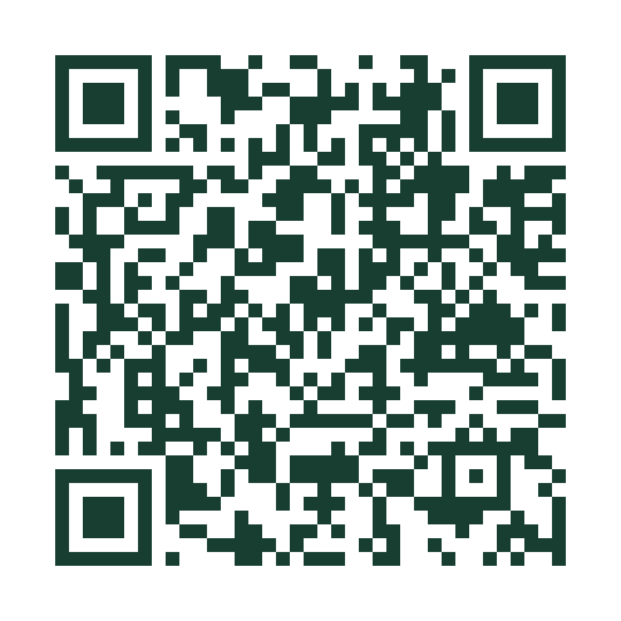

Muse-IRS · Observatoire public
Observatoire du parcours RSA
Ardèche
Information, sources et traçabilité documentaire

Scannez pour consulter l’observatoire
Dispositifs RSA · Marchés et organismes
Droits et démarches
Muse-IRS · Observatoire public
Ardèche
Information, sources et traçabilité documentaire

Dispositifs RSA · Marchés et organismes
Droits et démarches
Le QR renvoie directement à l’accueil du nouvel observatoire RSA, et non à l’Observatoire Ardèche Habitat. La page ne charge aucun générateur QR distant. Pour imprimer : papier A4, échelle 100 %, en-têtes et pieds de page désactivés.